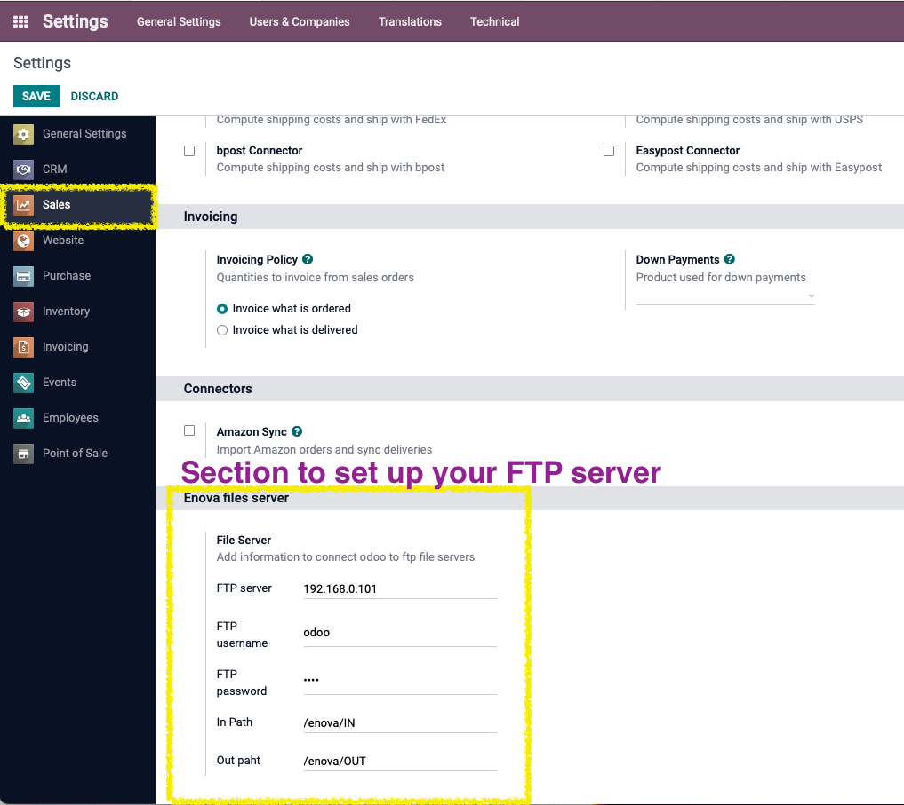
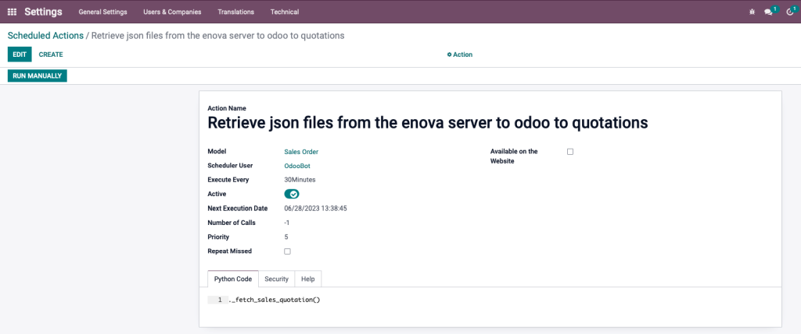
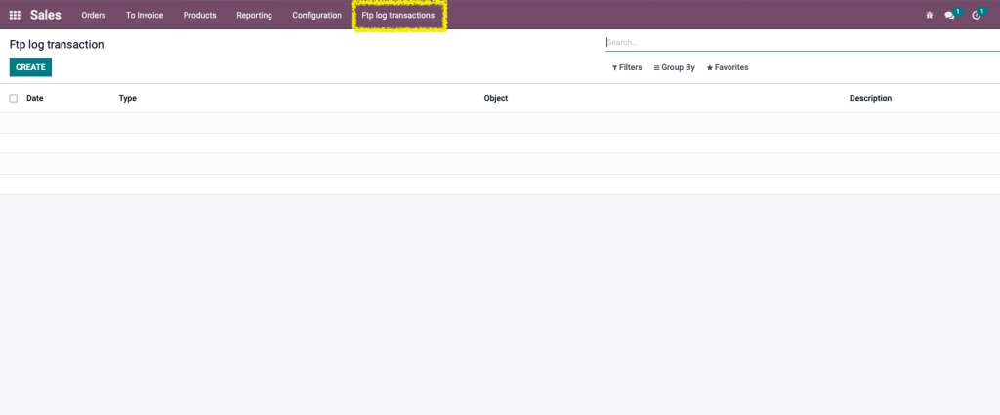

Enova Json Import
Create quotations throw json files. Use this module to import json files coming from the Enova system. For each processed file, it will generate a quote with the data coming from your client.
You will simply need to configure the ftp configuration properties as well as schedule the scheduled task to specify the frequency of execution.
Your vendors will transparently see the quotes placed by your client.
Configuration and related screens
1. Settings -> Sales in section: Enova files server fill all the fields:

2. By default de cron runs every 30 minutes but you can change that in the section: Schedule Actions (Please ask your odoo partner):

3. Trace your ftp files with the section "Ftp log transactions" in the menu Sales -> Ftp log transactions:
